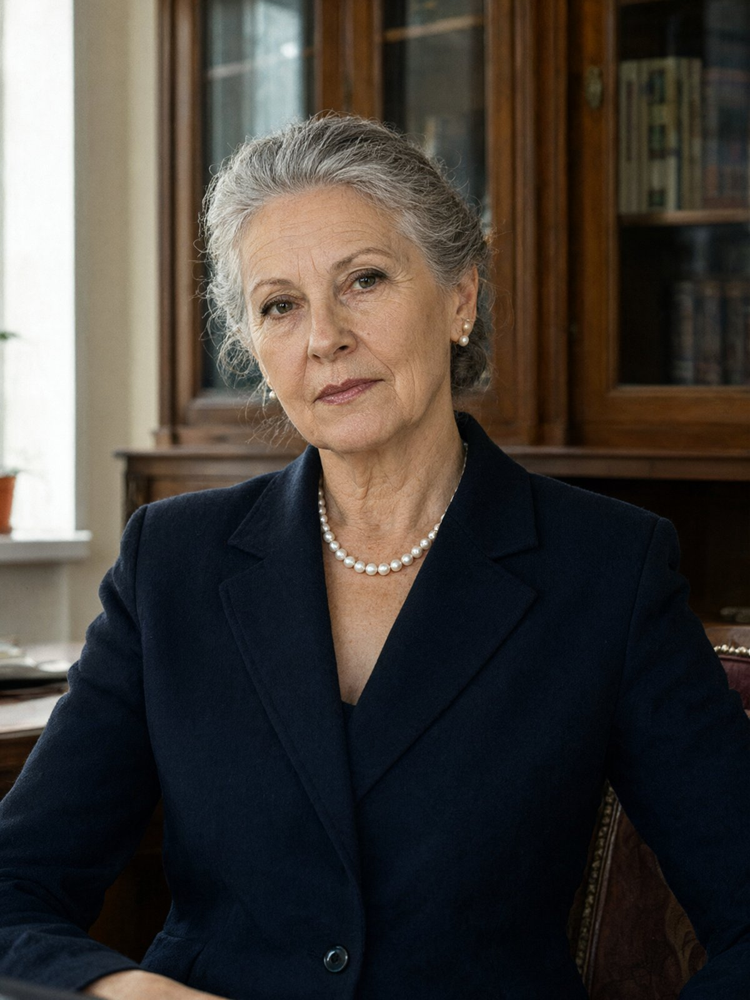

Місто: Львів
Дата: 15.11.2024
Час початку: 13:30 Час закінчення: 14:26
Місце проведення: приватна нотаріальна контора Мацюк І.Б., вул. Городоцька, 33
Складає протокол: капітан поліції Стасюк О.М., старший слідчий СВ Галицького ВП ГУНП у Львівській області
Допитується: Мацюк Ірина Богданівна, 1963 р.н., приватний нотаріус, проживає і працює за адресою: вул. Городоцька, 33.
Статус: свідок.
Свідку роз'яснено, що відповідно до ст. 63 Конституції України вона має право не давати показань щодо себе, членів своєї сім'ї та близьких родичів. За відмову від давання показань або завідомо неправдиві показання передбачена відповідальність за ст. 384 КК України. Свідок попереджена, підтвердила розуміння.
Свідку пред'явлено витяг з журналу прийому приватної нотаріальної контори за 14.11.2024 (запис «11:00 — Сенишин А.В., заповіт»), а також витяг з Спадкового реєстру щодо заповіту Сенишина А.В. від 03.03.2022, реєстраційний № 318.
Питання: Ви знали Сенишина Андрія Васильовича особисто?
Відповідь: Андрія знала давно, ще з тих часів, коли він був одружений з Оленою. Олена була моєю подругою, ми разом вчилися, і її не стало в сімнадцятому. Після того Андрій майже не приходив, а потім ми почали бачитися в справах. Ми колеги, дзвонили одне одному, обговорювали складні випадки. Особисто нас пов'язувала пам'ять про Олену.
Питання: Розкажіть про заповіт від 2022 року.
Відповідь: Заповіт він посвідчував у мене, третього березня двадцять другого року. Це був тривожний час, війна щойно почалася, всі тоді бігали з документами. Андрій прийшов до мене і сказав, що хоче розпорядитися майном. Квартиру на Ґерданській, 9, він заповідав Вікторії Гнатів. Все інше, тобто контору, авто і вклади, він залишив синові, Максиму.
Питання: Чому він так вирішив?
Відповідь: Він тоді боявся, що квартиру забиратимуть кредитори Максима. У Максима були борги, і не маленькі. Він хотів, щоб квартира не потрапила під стягнення через сина. Тому оформив її на Вікторію, а не на Максима. Він сказав мені так дослівно: «Хай у неї буде дах, поки Макс не візьметься за голову».
Питання: Чи знаєте ви, чи знала Гнатів Вікторія Олегівна про цей заповіт?
Відповідь: Точно не знаю, я їй не казала, це не моя справа. Але Андрій сам мені казав, що вона про заповіт знає.
Питання: Розкажіть про звернення Сенишина восени 2024 року.
Відповідь: Восьмого листопада він мені подзвонив. Сказав, що хоче переписати заповіт. На чотирнадцяте листопада, на одинадцяту, він записався до мене. Нового заповіту — квартиру заповідати Максимові, і з покладенням: квартиру не відчужувати протягом десяти років. Тобто Максим отримує її, але не може продати. Це його умова, я її записала.
Питання: Чи казав він щось ще під час розмови?
Відповідь: Казав, що Вікторії поки не треба знати. Дослівно: «Вікторії поки не кажи, вона вважає ту квартиру своєю». Я тоді сказала, що не розумію, навіщо такі таємниці. Він засміявся і відповів, що вона старий заповіт напам'ять цитує. Тоді це звучало як жарт, але я зауважила, що жарт не дуже добрий.
Питання: Чи був у Сенишина вже розроблений проєкт нового заповіту, чи він мав чернетку?
Відповідь: Чернетку я сама підготувала за його вказівками, за день-два до запису. Він погодився з текстом по телефону. Попередньо я нічого з ним не підписувала.
Питання: Чи були у Сенишина інші заповіти, окрім заповіту 2022 року?
Відповідь: Ні. Я б їх пам'ятала, а в реєстрі за його ім'ям більше нічого не значиться. Заповіт 2022 року був єдиний, і до запису на 14 листопада він лишався чинним.
Питання: Чи були у Сенишина інші контакти з вами у листопаді?
Відповідь: Ні. Крім дзвінка восьмого і запису, нічого не було. Він міг би прийти з паспортом, але не приїхав.
Питання: Розкажіть про 14 листопада.
Відповідь: Я чекала його о пів на одинадцяту, потім о одинадцятій, і до одинадцятої двадцять він не з'явився. Я набрала йому, телефон був поза зоною. Я ще подумала, що він забув або передумав, бо він і таке робив. Ввечері мені подзвонила знайома, з якою ми в одній групі, і сказала, що Андрія знайшли в конторі. Це був жахливий шок.
Питання: Чи були ви готові до нового заповіту на 14 листопада?
Відповідь: Так, усе було підготовлено, два примірники. Журнал я вела як звичайно, запис зроблено в ньому, і він лишився там, як є. Документи я нікому не віддавала.
Питання: Що б ви хотіли додати?
Відповідь: Я хочу сказати, що Андрій був людиною з великими плечима і маленькими страхами. Він боявся втратити все, що зробив, і за це тримався, як за тонку мотузку. Я не знаю, що сталося в тій конторі. Але я знаю, що він того вечора хотів навести лад у своїх документах, і це я маю на увазі. Записуйте, як вам треба.
З моїх слів записано вірно. Протокол прочитано особисто, зауважень не маю.
Свідок: /підпис/ Мацюк І.Б.
Слідчий: /підпис/ капітан поліції Стасюк О.М.